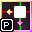

Tails7 Mapper Object
1. General Description of Object
Tails7 Mapper Object is an object that is responsible for all calculations of mapped objects (That is, objects with the Group.3D Objects group) including setting the position, scale and its visibility.
2. Variables
ℹ️ This object has the same variables as the mapped objects because it itself belongs to Group.3D Objects.
For this object, I do not recommend changing the values of the variables!
3. Behaviors
3.1. Details: Mapping Mode in Tails7 Mapper Object
This behavior declares how, for a given object, the computation of the position transformation into a transformed result giving the depth effect is to behave.
List of available modes:
R1.0.1
The main mode that transforms the position given by the variables _PositionX and _PositionY
and adjusts the calculations so that the result matches the shader.
Primarily used for ground-based objects (for example: walls, props, platforms, etc.).
Description of the operation of this mode:
-
First, compute the distance into the variable
_Distanceusing the values_DistanceXand_DistanceY. -
Next, transform the current position
_PositionXand_PositionYby applying a rotation based on_RotX, storing the results in_RotPosXand_RotPosY.
Additionally, these values are divided by_PosZ. -
Then we calculate the "shader-style" curvature via the function
Fun_Mode7. This value is normalized by the height of the objectTails7 Render Groundand multiplied by_Distortion. The resulting curvature is stored in_InY. -
We then apply this distortion to
_RotPosXand_RotPosY, writing the final values into_DistortedXand_DistortedY. At this stage, we add the value_OffsetYto_DistortedYthis shifts the object up and down to create the depths effect. -
Next, for
_OutXand_OutY, we compute the on-screen center point relative to the main objectTails7 Render Ground, selected by
Tails7 Center Pointer. These values are then added to or subtracted from (depending on X or Y) the_DistortedXand_DistortedYoffsets. -
Finally, we compute
_FinalXand_FinalY. To_FinalXwe add the horizontal shift_OffsetX, and to_FinalYwe add the value_RotZ(note that_RotZis not an actual rotation around the Z axis but a vertical shift along Y). -
We also calculate the angle
_Anglerepresenting how much we are rotated from a point by_DistanceXand_DistanceY.
R1.0.1_SKY
An additional mode that transforms the position given by _PositionX and _PositionY but does not apply the _PosZ modification.
Primarily used for background and sky elements (for example: clouds, sun, stars, mountains, etc.).
Description of the operation of this mode:
-
First, compute the distance into
_Distanceusing_DistanceXand_DistanceY. -
Next, transform the current position
_PositionXand_PositionYby applying a rotation based on_RotX, storing the results in_RotPosXand_RotPosY.
Here there is no division by_PosZ, so the object remains fixed regardless of height. -
Then calculate the curvature via
Fun_Mode7, normalize it by the height ofTails7 Render Ground, and multiply by_Distortion. Store the result in_InY. -
Apply this distortion to
_RotPosXand_RotPosY, writing into_DistortedXand_DistortedY, then add_OffsetYto_DistortedYfor the vertical depths effect. -
Compute
_OutXand_OutYby finding the screen center relative toTails7 Render Ground(selected byTails7 Center Pointer), then add or subtract_DistortedXand_DistortedY. -
Finally, calculate
_FinalXand_FinalY. Add_OffsetXto_FinalXand_RotZto_FinalY(again,_RotZis a vertical shift, not a true Z-axis rotation). -
We also calculate the angle
_Anglerepresenting how much we are rotated from a point by_DistanceXand_DistanceY.
3.2. Details: Mapping Screen Mode in Tails7 Mapper Object
This behavior declares how the object is to behave AFTER the calculation with Mapping Mode (that is, it modifies the _FinalX and _FinalY variables).
List of available modes:
DEFAULT
The default mode; does not modify the values of _FinalX and _FinalY.
CLAMP
This mode uses the range function and applies it to both _FinalX and _FinalY.
Description of this mode’s operation:
-
_FinalXis clamped between0andFrame Width(i.e., it cannot be less than0or greater than the screen width). -
_FinalYis clamped between0andFrame Height(i.e., it cannot be less than0or greater than the screen height).
CLAMPX
This mode uses the range function and applies it only to _FinalX; _FinalY remains unmodified.
Description of this mode’s operation:
-
_FinalXis clamped between0andFrame Width(i.e., it cannot be less than0or greater than the screen width).
CLAMPY
This mode uses the range function and applies it only to _FinalY; _FinalX remains unmodified.
Description of this mode’s operation:
-
_FinalYis clamped between0andFrame Height(i.e., it cannot be less than0or greater than the screen height).
INVERTED
This mode inverts _FinalX and _FinalY relative to the screen dimensions.
Description of this mode’s operation:
-
_FinalXis calculated asFrame Width - _FinalX(i.e., mirrored across the screen width). -
_FinalYis calculated asFrame Height - _FinalY(i.e., mirrored across the screen height).
INVERTEDX
This mode inverts only _FinalX relative to the screen width; _FinalY remains unmodified.
Description of this mode’s operation:
-
_FinalXis calculated asFrame Width - _FinalX(i.e., mirrored across the screen width).
INVERTEDY
This mode inverts only _FinalY relative to the screen height; _FinalX remains unmodified.
Description of this mode’s operation:
-
_FinalYis calculated asFrame Height - _FinalY(i.e., mirrored across the screen height).
3.3. Details: Distance Mode in Tails7 Mapper Object
This behavior determines how it should calculate the distance for the _DistanceX and _DistanceY variables.
List of available modes:
DEFAULT
By default, calculates the distance between the Tails7 Camera Object position and the point given by _PositionX and _PositionY. These values are also divided by _WorldScale.
STATIC
This mode does not calculate distance; it simply sets _DistanceX and _DistanceY to the values of _PositionX and _PositionY.
3.4. Details: Scale Mode in Tails7 Mapper Object
This behavior determines how it should calculate the scale for the _Scale, _ScaleX and _ScaleY variables.
List of available modes:
DEFAULT
The default mode that adjusts the scale given by _Scale, _ScaleX, and _ScaleY so that it matches the distance by the distortion value _InY and the position _PosZ.
STATIC
Similar to DEFAULT, this mode adjusts the scale given by _Scale, _ScaleX, and _ScaleY, but it does not depend on the distortion value _InY or the position _PosZ.
RES
Based on the raw values _Scale, _ScaleX, and _ScaleY, this mode also takes into account _ResolutionX, _ResolutionY, Frame Width, and Frame Height. As a result, the scale may differ separately for X and Y on different screen resolutions.
FACTOR
Similar to RES, this mode takes into account _ScaleFactorX, _ScaleFactorY, Frame Width, and Frame Height, which means the scale can vary separately for X and Y different screen resolutions.
3.5. Details: Layer Mode in Tails7 Mapper Object
This behavior determines how objects on the screen should be layered.
List of available modes:
TOCAMERA
This mode sets layer ordering based on the position of the Tails7 Camera Object. Objects closer to the camera object will be FRONT those that are further away and will be BEHIND. These calculations are stored in _LayerDistance, and the viewing angles in _AngleVisiblity and _AngularVisibility.
STATIC
This mode sets layer ordering based on the object’s own position by computing distance using only _PositionX and _PositionY. These calculations are stored in _LayerDistance, and the viewing angles in _AngleVisiblity and _AngularVisibility.
TOLAYER
This mode sets layer ordering based on the position of the Player Hitbox. Objects closer to the player hitbox will be FRONT those that are further away and will be BEHIND. These calculations are stored in _LayerDistance, and the viewing angles in _AngleVisiblity and _AngularVisibility.
Also, there is an event that always actulizes layers by Layer Object.
* AlwaysGroup.3D Objects:
Set _Layer to 16777216 - _LayerDistance( "Group.3D Objects" ) + _LayerOffset( "Group.3D Objects" )
Layer object:
Decreasing Sort by Alterable Value T
:
non-alts default to 0
3.6. Details: Visible Mode in Tails7 Mapper Object
This behavior determined when an object should be visible or not.
List of available modes:
DEFAULT
This mode determines when the object should have the _Visible flag enabled. It depends on whether the _AngularVisiblity angle is <= 100° or >= 260°, and on whether the object's position is on-screen or off-screen. It automatically sets the object's visibility.
DEFAULTEX
This mode is similar to DEFAULT, but it does not automatically set the object's visibility.
CLOSEFADE
This mode determines when the object should have the _Visible flag enabled. It depends on whether the _AngularVisiblity angle is <= 100° or >= 260°. It automatically sets the object's visibility.
CLOSEFADEEX
This mode is similar to CLOSEFADE, but it does not automatically set the object's visibility.